품질경영기사 (2017-03-05 기출문제)
1과목: 실험계획법
1. 23요인배치실험을 교락법을 사용하여 그림과 같이 2개의 블록으로 나누어 실험을 하려고 할 때의 설명으로 틀린 것은?
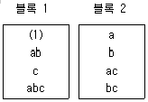
- 블록에 교락된 것은 교호작용 A×B×C이다.
- 두 블럭으로 나누어질 때 (1)을 포함한 것을 주블럭이라 한다.
- 블록에 교락시킬 때 주인자를 교락시키지 않도록 세심한 설계가 필요하다.
- 블록에 교락된 교호작용은 일반적으로 단독으로 제곱합을 검출할 수 없다.
(정답률: 72%)

2. 요인의 수준 ℓ=4, 반복수 m=3으로 동일한 1요인실험에서 총제곱합 (ST)은 2.383, 요인 A의 제곱합 (SA)은 2.011이었다. μ(Ai)와 μ(A'i) 의 평균치 차를 α=0.⑤로 검정하고 싶다. 평균치 차의 절대값이 약 얼마보다 클 때 유의하다고 할 수 있는가? (단, t0.975(8)=2.306, t0.95(8)=1.860이다.)
- 0.284
- 0.352
- 0.327
- 0.406
(정답률: 54%)
3. 모수요인 A(l 수준), B(m 수준)는 랜덤화가 곤란하고, 모수요인 C(n 수준)는 랜덤화가 용이하여, 요인 A,B를 일차단위에 배치하고, 요인 C를 이차단위로 하여 실험한, 일차단위가 이원배치인 단일분할 법에서 자유도의 계산식으로 틀린 것은?
- ve1)=(l-1)(m-1)
- ve2)=l(m-1)(n-1)
- vA×C)=(l-1)(n-1)
- vB×C)=(m-1)(n-1)
(정답률: 84%)
4. 모수요인 A는 3수준, 변량요인 B는 3수준으로 택하고 반복 2회의 2요인실험의 분산분석표에서 E(VB)의 값은?
- σ2e+2σ2B
- σ2e+2σ2A×B+3σ2B
- σ2e+6σ2B
- σ2e+2σ2A×B+6σ2B
(정답률: 63%)
5. 실험일, 실험장소 또는 시간적 차이를 두고 실시되는 반복 등과 같은 요인은?
- 블록요인
- 집단요인
- 표시요인
- 제어요인
(정답률: 74%)
6. 다음 직교배열표에서 A가 3열, B가 5열에 배치되었을 떄 A,B간에 교호작용이 있다면 요인 C를 배치할 수 있는 열을 모두 나열한 것은?
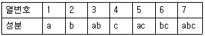
- 1,2,6
- 1,2,4,7
- 1,2,7
- 1,2,6,7
(정답률: 75%)
7. 23형 실험계획에서 A×B×C를 정의대비(defining contrast)로 잡아 1/2일부실시법을 행했을 때 요인 A와 별명(alias)관계가 되는 요인은?
- B
- A×B
- A×C
- B×C
(정답률: 83%)
8. 다구찌는 사회지향적인 관점에서 품질의 생산성을 높이기 위하여 다음과 같이 정의하였다. 품질항목에 속하지 않는 것은?
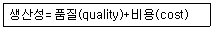
- 사용비용
- 기능산포에 의한 손실
- 폐해항목에 의한 손실
- 공해환경에 의한 손실
(정답률: 58%)
9. 3개의 공정(A)에서 나오는 제품의 부적합 품률이 작업 시간별(B)로 차이가 있는지 알아보기 위하여 오전, 오후, 야간 근무조에서 공정라인별로 각각 100개씩 조사하여 다음과 같은 데이터가 얻어졌다. 이 데이터를 이용하여 B1수준의 모부적 합품률 P(B1)의 95% 신뢰구간을 구하면 약 얼마인가? (단, Ve=0.0732이다.)
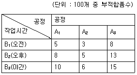
- (1.235%, 6.222%)
- (1.787%, 7.393%)
- (2.015%, 8.0⑤%)
- (2.272%, 8.395%)
(정답률: 57%)
10. 3수준 선점도에 대한 설명으로 틀린 것 은?
- 선의 자유도는 2이다.
- 점의 자유도는 2이다.
- 점은 하나의 열에 대응된다.
- 선은 점과 점 사이에 교호작용을 나타낸다.
(정답률: 70%)
11. 22형 실험에서 반복 r=4일 때 T11ㆍ=165, T12ㆍ=84, T21ㆍ=352, T22ㆍ=134일 떄, 교호작용의 제곱합 (SA×B)의 값은 약 얼마인가?
- 83.313
- 126.125
- 1173.063
- 3510.563
(정답률: 73%)
12. 실험계획 시 실험에 직접 취급되는 요인은 매우 다양하다. 실험에 직접 취급되는 요인으로 적용하기 어려운 것은?
- 실험의 효율을 올리기 위해서 실험환경을 층별한 요인
- 실험의 목적을 달성하기 위하여 이와 직결된 실험의 반응치
- 실험용기, 실험시기 등과 같이 다른 요인에 영향을 줄 가능성이 있는 요인
- 주효과의 해석은 의미가 없지만 제어요인과 교호작용 효과의 해석을 목적으로 하는 요인
(정답률: 31%)
13. 다음의 표는 요인 A,B에 대한 반복 없는 모수모형 2요인실험의 분산분석표이다. 이 실험의 품질특성은 망대특성이라고 할 때 틀린 것은?
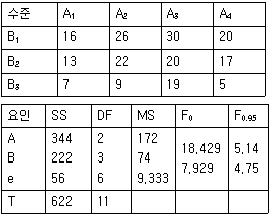
- 최적해의 점 추정치는
 이며 점 추정치는 29이다.
이며 점 추정치는 29이다. - 모평균의 95% 신뢰구간을 위한
 이다.
이다. - t0.975(6)=2.447일 때 최적조건에서의 모평균의 신뢰구간은 약 23.71~34.29이다.
- 유의수준 5%로 요인 A,B는 모두 유의하며, 망대특성이므로 최적해는
 이다.
이다.
(정답률: 64%)
14. 완전랜덤화법(completely randomizeddesign)을 이용하여 l개의 실험조건에서 각각 m번씩 실험하여 얻은 관측치를 분석하기 위하여 다음과 같은 수학적인 모형을 세웠다. 모형의 설명 중 틀린 것은?
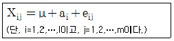
- μ는 실험전체의 모평균을 나타낸다.
- Xij는 i번째 실험조건에서 j번째 관측치를 나타낸다.
- ai는 i번째 실험조건의 영향 또는 치우침을 나타낸다.
- eij는 오차를 나타내며 상호 종속적인 관계를 가지고 분포한다.
(정답률: 74%)
15. 4개의 처리를 각각 n회씩 반복하여 평균치
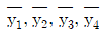
를 얻었다. 대비(contrast)가 될 수 없는 것은?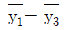
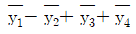
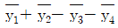
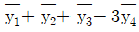
(정답률: 83%)
16. 회귀선에 의하여 설명되지 않는 편차
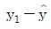
를 전차(residual)라고 한다. 이 잔차 (ei)의 성질을 설명한 내용 중 틀린 것은?- 잔차들의 합은 영이다. 즉,

- 잔차들의 xi에 의한 가중합은 영이다. 즉,

- 잔차들의 제곱과
 의 가중합은 영이다. 즉,
의 가중합은 영이다. 즉, 
- 잔차들의
 (회귀직선추정식)에 의한 가중합은 영이다. 즉,
(회귀직선추정식)에 의한 가중합은 영이다. 즉, 
(정답률: 67%)
17. A요인을 4수준, B요인을 2수준, C요인을 2수준, 반복 2회의 지분실험법을 행하고 분산분석표를 작성한 결과 다음과 같았다. 이 때
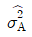
의 값은 약 얼마인가?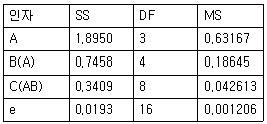
- 0.0394
- 0.⑤57
- 0.1113
- 0.1484
(정답률: 63%)
18. 라틴방격법을 설명한 내용 중 틀린 것은?
- 3×3 라틴방격은 9가지의 상이한 배치가 존재한다.
- 라틴방격법에서 각 처리는 모든 행과 열에 꼭 한번 씩 나타나 있다.
- 제1행, 제1열이 자연수 순서로 나열되어 있는 라틴방격을 표준라틴방격이라 한다.
- 라틴방격법은 4각형속에 라틴문자 A,B,C를 나열하여 4각형을 만들어 사용해서 라틴방격이란 이름이 붙게 되었다.
(정답률: 72%)
19. 반복이 없는 3요인실험에서 분석결과 교호작용은 모두 유의하지 않았다.
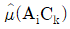
의 신뢰구간 추정을 할 때에 사용되는 유효반복수(ne)의 값은? (단, A,B,C요인의 수준 수는 각각 3,4,5이다.)- 4.50
- 4.98
- 8.57
- 9.00
(정답률: 63%)
20. 1요인실험에서 완전 랜덤화 모형과 2요인실험의 난괴법에 관한 설명으로 틀린 것은?
- 난괴법에서 변량요인 B에 대한 모평균을 추정하는 것은 의미가 없다.
- 난괴법은 A요인의 모수요인, B는 변량요인이며 반복이 없는 경우를 지칭한다.
- 난괴법에서 변량요인 B를 실험일 또는 실험장소 등인 경우로 선택할 때 집단요인이 된다.
- k개의 처리를 r회 반복 실험하는 경우에 오차항의 자유도는 1요인실험이 난괴법 보다 r-1이 크다.
(정답률: 59%)
2과목: 통계적품질관리
21. 로트별 합격품질한계(AQL)지표형 샘플링검사 방식(KS Q ISO 2859-1 :2014)의 내용 중 맞는 것은?
- 다회 샘플링 형식으로 5회를 적용
- 수월한 검사에서 조건부 합격제도의 활용
- R10 등비급수를 활용한 체계적 수치표의 구성
- 보통검사에서 까다로운 검사로의 엄격도 조정에 전환점수제도 적용
(정답률: 48%)
22. 샘플링검사의 선택조건으로 틀린 것은?
- 실시하기 쉽고 관리하기 쉬울 것
- 목적에 맞고 경제적인 면을 고려할 것
- 샘플링을 실시하는 사람에 따라 차이가 있을 것
- 공정이나 대상물 변화에 따라 바꿀 수 있을 것
(정답률: 83%)
23. Y제품의 인장강도의 평균값이 450kg/cm2이상인 로트는 통과시키고, 420kg/cm2이하인 로트는 통과시키지 않도록 하는 계량 규준형 1회 샘플링 검사법을 설계하고자 한다. 샘플링검사에서 로트의 평균값이 420kg/cm2이하인 로트가 운 좋게 합격될 확률을 0.10이하로, 로트의 평균값이 450kg/cm2이상인 로트가 잘못되어 불합격될 확률을 0.⑤이하로 하고 싶다. 다음 설명 중 틀린 것은?
- 생산자 위험은 5%이다.
- 소비자 위험은 10%이다.
- 로트의 평균값을 보증하는 방식이다.
- 시료의 크기와 상한합격판정값을 구하여야 한다.
(정답률: 70%)
24. 부적합품률에 대한 계량형 축차 샘플링 검사 방식의 표준번호로 맞는 것은?
- KS Q ISO 0001
- KS Q ISO 8422
- KS Q ISO 9001
- KS Q ISO 8423
(정답률: 66%)
25. A사에서 생산하는 강철봉의 길이는 평균 2.8m, 표준편차 0.20m인 정규분포를 따르는 것으로 알려져 있다. 25개의 강철봉의 길이를 측정하여 구한 평균이 2.72m라면 평균이 작아졌다고 할 수 있는가를 유의수준 5%로 검정할 때, 기각역(R)과 검정통계량 (u0)의 값은?
- R={u＜-1.645}, u0=-2.0
- R={u＜-1.96}, u0=-2.0
- R={u＞1.645}, u0=2.0
- R={u＞1.96}, u0=2.0
(정답률: 63%)
26. 임의의 두 사상 A, B가 독립사상이 되기 위한 조건은?
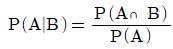
- P(A∩B)=P(A)+P(B)
- P(A∪B)=P(A)ㆍP(B)
- P(A∩B)=P(A)ㆍP(B)
(정답률: 70%)
27. 로트의 평균치를 보증하는 계수 및 계량 규준형 1회 샘플링검사(KS Q 0001:2013)에서 특성치가 망대특성일 때, 설명 중 맞는 것은?
- AOQL이 주어져야 한다.
- OC곡선은 특성치의 평균 m의 증가함수이다.
- OC곡선의 Y축은 평균치의 값으로 나타낸다.
- OC곡선의 X축은 로트의부적합품률(p)이 된다.
(정답률: 55%)
28. 어느 주물공장에서 제조한 제품의 무게는 정규분포를 한다고 한다. 이 제품의 모평균 μ를 구간 추정하기 위해 모집단에서 6개를 무작위로표본 추출하였더니 다음과 같다. 이 제품의 95% 신뢰구간은 약 얼마인가? (단, t0.975(5)=2.571이다.)
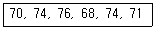
- (69.02, 75.31)
- (73.08, 79.90)
- (75.50, 78.90)
- (80.65, 86.90)
(정답률: 74%)
29. 적합도 검정에 대한 설명 중 틀린 것은?
- 적합도 검정은 계수형 자료에 주로 사용된다.
- 적합도 검정의 검정통계량은 카이제곱분포 (X2)를 따른다.
- 적합도 검정 시 확률 Pi가정된 값이 주어진 경우 유의수준 α에서 기각역은 X21-a/2(k-1)이다.
- 적합도 검정 시 확률 Pi의 가정된 값이 주어지지 않은 경우, 자유도 v=k-p-1(p는 parameter의 수이다.)를 따른다.
(정답률: 48%)
30. 모상관계수의 유무에 관한 검정으로 활용되는 검정통계량으로 틀린 것은?
- r0=r
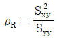
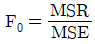
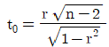
(정답률: 60%)
31. 통계적 가설검정에서 유의수준에 대한 설명으로 틀린 것은?
- 검정에 앞서 미리 정하여 두는 위험률이다.
- 일반적으로 제2종의 과오를 범하는 확률을 의미한다.
- 1에서 유의수준을 빼고 100%를 곱하면 신뢰율이 된다.
- 통계적 가설검정에서 귀무가설이 옮음에도 불구하고 기각할 확률이다.
(정답률: 71%)
32. 과거 우리 회사에서 생산하는 A제품의 표면에는 평균 6개(m=6)의 핀홀(pinhole)이 있었다. 최근 새로운 도장 설비로 교체를 한 후 핀홀의 수를 확인 하였더니 x=1이었다. 위험률 5%에서 모부적합수는 작아졌다고 할 수 있는가?
- 커졌다고 할 수 있다.
- 작아졌다고 할 수 있다.
- 작아졌다고 할 수 없다.
- 현재로서는 알 수 없다.
(정답률: 71%)
33. 3σ관리한계를 적용하는 부분군의 크기(n) 4인
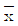
관리도에서 UCL=13, LCL=4일 때, 이 로트 개개의 표준편차 (σx)는 얼마인가?- 1.5
- 2.25
- 3
- 4
(정답률: 57%)
34. 평균치와 분산이 같은 확률 분포는?
- 정규분포
- 이항분포
- 지수분포
- 푸아송분포
(정답률: 66%)
35. p관리도에 관한 설명으로 틀린 것은?
- 이항분포를 따르는 계수치 데이터에 적용된다.
- 부분군의 크기는 가급적 n=0.1/p ~ 0.5/p를 만족하도록 설정한다.
- 부분군의 크기가 일정할 때는 np관리도를 활용하는 것이 작성 및 활용상 용이하다.
- 일반적으로 부적합품률에는 많은 특성이 하나의 관리도 속에 포함되므로
 관리도 보다 해석이 어려울 수 있다.
관리도 보다 해석이 어려울 수 있다.
(정답률: 58%)
36.
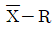
관리도에서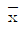
의 산포를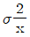
, 군간산포를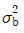
, 군내산포를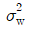
로 표현할때 틀린 것은? (단, k는 부분군의 수, n은 부분군의 크기, d2는 부분군의 크기가 n일 때의 값이다.)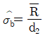
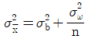
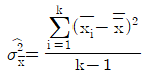
- 완전한 관리상태일 때 σb2=0
(정답률: 52%)
37. 관리도에 대한 설명으로 틀린 것은?
 관리도에서 부분군의 크기 n이 증가하면 관리한계는 좁아진다.
관리도에서 부분군의 크기 n이 증가하면 관리한계는 좁아진다. 관리도는 중심값과 산포를 동시에 관리할 수 있는 관리도이다.
관리도는 중심값과 산포를 동시에 관리할 수 있는 관리도이다.- 하루 생산량이 아주 적어 합리적인 군으로 나눌 수 없는 경우에
 관리도를 적용한다.
관리도를 적용한다.  관리도는 로트가 정규분포를 따른다는 가정이 필요하며 계량치 데이터에 적용가능하다.
관리도는 로트가 정규분포를 따른다는 가정이 필요하며 계량치 데이터에 적용가능하다.
(정답률: 55%)
38. 10톤씩 적재하는 100대의 화차에서 5대의 화차를 샘플링하여 각 화차로부터 3인크리먼트씩 랜덤하게 시료를 채취하는 샘플링 방법은?
- 집락 샘플링
- 층별 샘플링
- 계통 샘플링
- 2단계 샘플링
(정답률: 50%)
39. 관리도에 관한 설명으로 틀린 것은?
 관리도의 검출력은 x관리도보다 좋다.
관리도의 검출력은 x관리도보다 좋다.- 관리한계를 2σ한계로 좁히면 제1종 오류가 감소한다.
- c관리도는 각 부분군에 대한 샘플의 크기가 반드시 일정해야 한다.
- u관리도에서 부분군이 샘플의 수가 다르면 관리한계는 요철형이 된다.
(정답률: 62%)
40. 두 모집단에서 각각 n1=5, n2=6으로 추출하여 어떤 특정치를 측정한 결과가 다음의 데이터와 같았다. 모분산비의 검정을 위한 검정통계량은 약 얼마인가?
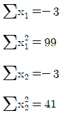
- 2.08
- 2.80
- 3.08
- 3.80
(정답률: 64%)
3과목: 생산시스템
41. 두 대의 기계를 거쳐 수행되는 작업들의 총작업시간을 최소화하는 투입순서를 결정하는데 가장 중요한 것은?
- 작업의 납기순서
- 투입되는 작업자의 수
- 공정별ㆍ작업별 소요시간
- 시스템 내 평균 작업 수
(정답률: 77%)
42. 분산구매제도의 장점으로 맞는 것은?
- 거래처가 한정되어 있어 품질관리가 수월해진다.
- 공장을 둘러싼 지역사회와 좋은 관계를 창조, 유지할 수 있고 지역사회에 경제적 기여를 할 수 있다.
- 구매활동의 평가가 치밀할 수 있으므로 높은 성과를 얻을 수 있는 효율적인 관리가 가능하다.
- 회사의 요구를 집중시킬 수 있으므로 대량구매에 따른 구매가격의 인하가 가능해진다.
(정답률: 72%)
43. 각 부서별로 보전업무 담당자를 배치하여 보전활동을 실시하는 보전조직의 형태는?
- 집중보전
- 부문보전
- 지역보전
- 절충보전
(정답률: 74%)
44. 재고 저장공간을 품목별로 두 칸으로 나누고, 윗칸에는 운전재고를, 아랫칸에는 재주문점에 해당하는 재고를 쌓아둠으로써, 윗칸에 재고가 없으면 재주문점에 이르렀음을 시각적으로 파악할 수 있는 방법은?
- EPQ
- 정기발주방식
- 콕(cock)시스템
- 더블빈(double-bin)법
(정답률: 77%)
45. 설비 선정 시 표준품을 대량으로 연속 생산할 경우 어떤 기계설비를 사용하는 것이 유리한가?
- 범용기계설비
- 전용기계설비
- GT(Group Technology)
- FMS(Flexible Manufacturing System)
(정답률: 74%)
46. 표준시간 산정기법 중 F.W Taylor의 과학적 관리에서 이용한 기법은?
- PTS법
- Stop Watch법
- 실적자료법
- Work Sampling법
(정답률: 67%)
47. 작업자 공정분석에 관한 설명으로 틀린 것은?
- 창고, 보전계의 업무와 경로 개선에 적용된다.
- 제품과 부품의 개선 및 설계를 위한 분석이다.
- 기계와 작업자 공정의 관계를 분석하는데 편리하다.
- 이동하면서 작업하는 작업자의 작업위치, 작업순서, 작업동작 개선을 위한 분석이다.
(정답률: 65%)
48. 생산시스템의 투입(input)단계에 대한 설명으로 가장 적합한 것은?
- 변환을 통하여 새로운 가치를 창출하는 단계이다.
- 필요로 하는 재화나 서비스를 산출하는 단계이다.
- 기업의 부가가치창출 활동이 이루어지는 구조적 단계이다.
- 가치창출을 위하여 인간, 물자, 설비, 정보, 에너지 등이 필요한 단계이다.
(정답률: 75%)
49. 공정 간의 균형을 위해 애로공정을 합리적으로 해결하는 방법에 속하지 않은 것은?
- 부하거리법
- 라인밸런싱
- 시뮬레이션
- 대기행렬이론
(정답률: 43%)
50. 라이트(J.M.Wright)가 주장한 채찍효과의 대처방안으로 틀린 것은?
- 변동폭의 감소(reducing variability)
- 리드타임의 단축(lead time reducing)
- 전략적 파트너십(strategic partnership)
- 불확실성의 증가(increasing uncertainty)
(정답률: 74%)
51. 변동하는 수요에 대응하여 생산율ㆍ재고수준ㆍ고용수준ㆍ하청 등의 관리가능 변수를 최적으로 결합하기 위한 용도로 수립되는 계획은?
- 소일정계획(detail scheduling)
- 대일정계획(master scheduling)
- 주일정계획(master productionschedule)
- 총괄생산계획(aggregate productionplanning)
(정답률: 74%)
52. 최소자승법에 의한 예측의 설명으로 틀린 것은?
- 예측오차의 합을 최소화시킨다.
- 예측오차의제곱의 합을 최소화시킨다.
- 예측오차는 실제치와 예측치의 차이이다.
- 회귀선, 추세선, 예측선은 같은 의미이다.
(정답률: 54%)
53. PERT에서 어떤 요소작업을 정상작업으로 수행하면 5일에 2500만원이 소요되고 특급작업으로 수행하면 3일에 3000만원이 소요된다. 비용구배(Cost Slope)는 얼마인가?
- 100만원/일
- 167만원/일
- 250만원/일
- 500만원/일
(정답률: 69%)
54. 제품-생산량(P-Q)분석에서 제품과 설비배치유형을 맞게 연결시킨 것은?
- 다품종 소량생산-흐름식배치
- 다품종 소량생산-제품별배치
- 소품종 대량생산-공정별배치
- 소품종 대량생산-제품별배치
(정답률: 65%)
55. 제품별로 수요량, 생산량, 생산능력이 다를 경우 최적의 제품조합(ProductMix)을 구하는 데 적용하는 기법은?
- ABC분석
- PERT/CPM
- LP(Linear Programming)
- SDR(Search Decision Rule)
(정답률: 51%)
56. 설비 고장과 관련하여 물리적 잠재결함의 유형에 해당되는 것은?
- 기능이 부족하여 놓친다.
- 이 정도는 문제없다고 무시해 버린다.
- 분석하거나 진단하지 않으면 알 수 없는 내부결함이다.
- 눈에 보이는 데도 불구하고 무관심해서 보려고 하지 않는다.
(정답률: 58%)
57. JIT를 적용하는 생산현장에서 부품의 수요율이 1분당 3개이고, 용기당 30개의 부품을 담을 수 있을 때 필요한 간판의 수와 최대재고수는? (단, 작업장의 리드타임은 100분이다.)
- 간판수=5, 최대재고수=100
- 간판수=10, 최대재고수=200
- 간판수=10, 최대재고수=300
- 간판수=20, 최대재고수=400
(정답률: 74%)
58. 위치고정형 배치가 적절한 산업은?
- 스키장
- 휴대폰제조
- 출판업
- 금형제작업
(정답률: 74%)
59. 발주점 방식과 MRP방식을 비교한 것으로 틀린 것은?
- 발주점 방식은 수요패턴이 산발적이지만 MRP방식은 연속적이다.
- 발주점 방식의 발주개념은 보충개념이나 MRP방식의 경우 소요개념이다.
- 발주점 방식의 수요예측자료는 과거의 수요실적에 기반을 두지만, MRP방식은 주일정계획에 의한 수요에 의존한다.
- 발주점 방식에서 발주량의 크기는 경제적주문량으로 일괄적이지만, MRP방식에서는 소요량으로 임의적이다.
(정답률: 54%)
60. 어떤 조립라인 작업에 있어서 1일 생산량 500개, 근무시간 8시간, 중식을 포함한 휴식시간은 100분일 때, 최종공정에서 피치마크상 완성품이 없는 경우 3%라인 정지율이 4%일 때 피치타임은 약 얼마인가?
- 0.708분
- 0.793분
- 0.875분
- 0.975분
(정답률: 52%)
4과목: 신뢰성관리
61. 신뢰도가 각각 0.9인 부품 3개를 그림과 같이 연결하였을 때 이 시스템의 신뢰도는 얼마인가?
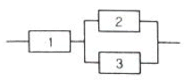
- 0.729
- 0.891
- 0.990
- 0.999
(정답률: 69%)
62. 신뢰도가 0.95인 부품이 직렬로 결합되어 시스템을 구성한다면, 시스템의 목표 신뢰도 0.90을 만족시키기 위한 부품의 수는?
- 2개
- 3개
- 4개
- 5개
(정답률: 64%)
63. 부품에 가해지는 부하(y)는 평균이 25000, 표준편차가 4272인 정규분포를 따르며, 부품의 강도(x)는 평균이 50000이다. 신뢰도 0.999가 요구될 때 부품강도의 표준편차는 약 얼마인가? (단, P(Z≥-3.1)=0.999이다.)
- 6840psi
- 7840psi
- 9850psi
- 13680psi
(정답률: 61%)
64. 평균수명이 4000시간인 2개의 부품이 병렬결합된 시스템의 평균수명은 몇 시간인가?
- 2000
- 4000
- 6000
- 8000
(정답률: 66%)
65. 비기억(memoryless)특성을 가짐으로 수리가능한 시스템의 가용도(availability)분석에 가장 많이 사용되는 수명분포는?
- 감마분포
- 와이블분포
- 지수분포
- 대수정규분포
(정답률: 66%)
66. 신뢰성시험에 대한 설명 중 틀린 것은?
- 현장시험(Field Test)은 실제 사용 상태에서 실시하는 시험이다.
- 가속수명시험은 고장매커니즘을 촉진하기 위해 가혹한 환경조건에서 실시하는 시험이다.
- 정수중단시험은 규정된 시험시간 또는 고장발생수에 도달하면 시험을 종결하는 방식이다.
- 단계 스트레스시험이란 아이템에 대하여 등 간격으로 여러 증가하는 스트레스 수준을 순차적으로 적용하는 시험이다.
(정답률: 68%)
67. 용어-신인성 및 서비스 품질(KS A3004:2002)규격에서 아이템의 고장 확률 또는 기능열화를 줄이기 위해 미리 정해진 간격 또는 규정된 기준에 따라 수행되는 보전을 뜻하는 용어는?
- 원격보전
- 제어보전
- 예방보전
- 개량보전
(정답률: 65%)
68. 고장률 곡선에서 초기에 발생하는 고장률 함수의 특성은?
- AFR(average failure rate)
- CFR(constant failure rate)
- IFR(increasing failure rate)
- DFR(decreasing failure rate)
(정답률: 67%)
69. 신뢰성을 향상시키는 설계방법이 아닌 것은?
- 스트레스를 분산시킨다.
- 사용하는 부품의 수를 늘린다.
- 부품에 걸리는 스트레스를 경감시킨다.
- 스트레스에 대한 안전계수를 크게 한다.
(정답률: 70%)
70. 지수분포를 따르는 부품 10개에 대해 고장이 나면 즉시 교체가 되는 수명시험으로 100시간에서 중지하였다. 이 시간 동안 고장 난 부품이 4개로 고장이 각각 10, 30, 70, 90시간에서 발생하였다. 이 부품에 대한 t0=100시간에서의 누적고장률 H(t)는 얼마인가?
- 0.33/hr
- 0.40/hr
- 0.50/hr
- 0.67/hr
(정답률: 40%)
71. 그림에서 A,B,C의 고장확률이 각각 0.02, 0.1, 0.⑤인 경우 정상사상의 고장 확률은?
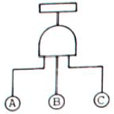
- 0.0001
- 0.1621
- 0.8379
- 0.9999
(정답률: 65%)
72. 부품의 단가는 400원이고, 시험하는 전체 부품의 시간당 시험비는 60원이다. 총시험시간(T)을 200시간으로 수명시험을 할 때, 어느 것이 가장 경제적인가?
- 샘플 5개를 40시간 시험한다.
- 샘플 10개를 20시간 시험한다.
- 샘플 20개를 10시간 시험한다.
- 샘플 40개를 5시간 시험한다.
(정답률: 73%)
73. MTTF 산출식으로 맞는 것은? (단, R(t) : 신뢰도함수, f(t) : 고장밀도함수이다.)
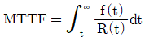
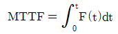
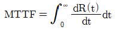
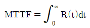
(정답률: 31%)
74. 다음 FMEA의 절차를 순서대로 나열한 것은?
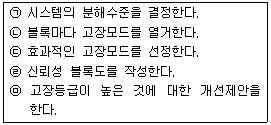
- ㉠-㉡-㉢-㉣-㉤
- ㉢-㉤-㉠-㉣-㉡
- ㉣-㉤-㉡-㉠-㉢
- ㉠-㉣-㉡-㉢-㉤
(정답률: 46%)
75. 표본의 크기가 n일 때 시간 t를 지정하여 그 시간까지 고장수를 r로 한다면 수명 t에 대한 신뢰도 R(t)의 추정식은?
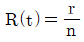
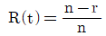
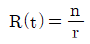
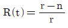
(정답률: 66%)
76. 시스템의 고장율이 0.03/hr이고 수리율이 0.1/hr인 경우, 시스템의 가용도는? (단, 고장시간과 수리시간은 지수분포를 따른다.)
- 13/3
- 13/10
- 3/13
- 10/13
(정답률: 64%)
77. 가속수명시험의 시험조건 사이에 가속성이 성립한다는 것을 확률용지에서 어떻게 확인할 수 있는가?
- 확률용지에서 각 시험조건의 수명분포 추정선들이 서로 평행이다.
- 확률용지에서 각 시험조건의 수명분포 추정선들이 서로 직교한다.
- 확률용지에서 각 시험조건의 수명분포로 추정선들이 상호 무상관이다.
- 확률용지에서 각 시험조건의 수명분포 추정선들의 절편이 서로 동일하다.
(정답률: 54%)
78. 샘플 10개에 대한 수명시험에서 얻은 데이터는 다음과 같다. 중앙순위법(median rank)을 이용한 t=40시간에서의 누적고장확률 (F(t))의 값은 약 얼마인가?
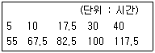
- 0.450
- 0.452
- 0.455
- 0.500
(정답률: 63%)
79. 고장밀도함수가 지수분포에 따르는 부품을 100시간 사용하였을 때, 신뢰도가 0.96인 경우 순간고장률은 약 얼마인가?
- 1.⑤×10-3/시간
- 2.02×10-4시간
- 4.08×10-4시간
- 5.13×10-4시간
(정답률: 57%)
80. 지수분포의 확률지에 관한 설명으로 틀린 것은?
- 회귀선의 기울기를 구하면 평균고장률이 된다.
- 세로축은 누적고장률, 가로축은 고장시간을 타점하도록 되어 있다.
- 타점결과 원점을 지나는 직선의 형태가 되면 지수분포라 볼 수 있다.
- 누적고장률의 추정은 t시간까지의 고장회수의 역수를 취하여 이루어진다.
(정답률: 42%)
5과목: 품질경영
81. 문서관리의 근본적 목적으로 맞는 것은?
- 정확한 정보가 기록으로 남도록 하기 위하여
- 문제가 발생하는 경우 근거로 사용하여야 하기 때문에
- 올바른 문서만이 필요한 장소에서 사용되어 지도록 하기 위하여
- 외부기관의 심사에 대비하여 체계적으로 업무가 진행되고 있음을 보장하기 위하여
(정답률: 54%)
82. 품질경영시스템-요구사항(KS Q ISO9001:2015)에서 품질경영원칙이 아닌 것은?
- 리더십
- 고객중시
- 프로세스 접근법
- 품질방침 및 품질목표
(정답률: 39%)
83. 다음 조건하에서 계측시스템의 산포(σm)는 약 얼마인가?
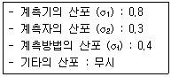
- 0.78
- 0.84
- 0.87
- 0.94
(정답률: 55%)
84. 산업표준화법에서 지정하고 있는 산업표준화의 대상에 해당되지 않는 것은?
- 광공업품의 시험, 분석, 감정, 부호, 단위
- 광공업품의 생산방법, 설계방법, 제도방법
- 구축물과 그 밖의 공작물의 설계, 시공방법
- 전기통선 관련 서비스의 제공절차, 체계, 평가방법
(정답률: 54%)
85. 품질관리에 일반적으로 사용되는 용어에 대한 설명으로 틀린 것은?
- 6시그마 수준 : 부적합품(불량품)의 수가 1백만개 당 3~4개 정도로 부적합품이 거의 발생하지 않는 상태를 의미한다.
- DPMO : 100만번의 기회 당 부적합 발생건수를 뜻하는 용어이며 DPMO는 시그마수준이 높을수록 작아진다.
- 부적합비용 : 나쁜 품질에 의해 발생되는 비용으로 실패비용이라고도 하며, 내부 실패비용과 외부실패비용으로 구분한다.
- 예방비용 : 제품이나 서비스가 제대로 작동되는지 검사하는 것과 관련된 비용과 검사, 실험실 실험, 현장실험 등에 해당하는 비용이다.
(정답률: 52%)
86. 계량의 기본단위로 맞는 것은?
- 길이 : mm
- 질량 : g
- 시간 : mm
- 물질량 : mol
(정답률: 64%)
87. 회사정책과 관리, 감독, 작업조건 등을 종업원의 불만요인으로, 성취감, 인정, 직무, 책임감, 향상, 개인진보의 가능성 등을 만족요인으로 주장한 동기부여 이론은?
- Maslow 이론
- Herzberg 이론
- McGregor 이론
- Cleland 와 Kocaoglu이론
(정답률: 60%)
88. 부적합품 손실금액, 부적합품수, 부적합수 등을 요인별, 현상별, 공정별, 품종별등으로 분류해서 크기의 차례로 늘어놓은 그림을 무엇이라 하는가?
- 산점도
- 파레토도
- 그래프
- 특성요인도
(정답률: 65%)
89. 내부고객 및 외부고객에 관한 설명으로 틀린 것은?
- 고객중심의 품질경영은 고객을 외부고객으로만 규정하고 종업원이 고객에게 최선을 다할 것을 강조하는 것이 무엇보다도 중요하다.
- 데밍은 전통적인 조직의 경계를 철폐하여 완제품의 최종소비자인 고객과 같은 외부고객은 물론 앞 공정에서 생산한 부품이나 구성품을 사용하는 후 공정, 즉 내부고객의 중요성을 강조하였다.
- 생산과정의 후 공정에서 일하는 작업자는 앞 공정의 고객이 된다. 이러한 관점에서 기업 내부에도 업무의 흐름에 따라 내부고객들과 유기적으로 연결되어 있으며 외부고객이란 단기 부가가치 선상의 최후에 위치해 있는 내부고객을 의미하는 것과 같다.
- 전통적으로 고객은 제품의 개발과정에서 대개가 제외되었다. 그러나 경쟁이 치열하게 전개되는 시장에서 이러한 방법을 고수하는 것은 위험하다. 종합적 품질경영에서 외부고객의 요구를 규명하는 것은 제품개발과정에서 자연스러운 현상이다.
(정답률: 66%)
90. 공정의 산포가 규격의 최대, 최소치의 차보다 충분히 작고 중심이 안정된 경우의 조치사항으로 틀린 것은?
- 현행 제조공정의 관리를 계속한다.
- 검사주기를 늘리거나 간소화 한다.
- 실험을 계획하여 공정의 산포를 감소시킨다.
- 관리한계를 벗어나는 제품은 원인을 철저히 규명하여야 한다.
(정답률: 48%)
91. 전기조립품을 제조하는 공장에서 공정이 안정되어 있는가를 판단하기 위해 n=5, k=20의
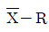
관리도를 작성하였다. 그 결과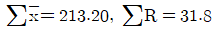
을 얻었으며 공정이 안정된 것으로 판정되었다. 이 때 공정능력지수(CP)가 1인 경우 규정공차 (U-L)는 약 얼마인가? (단, n=5일 때, d2=2.326이다.)- 1.368
- 3.180
- 4.102
- 8.204
(정답률: 52%)
92. 6시그마 추진을 위한 교육을 받고 현조직에서 업무를 수행하면서 동시에 개선 활동팀에 참여하여 부분적인 업무를 수행하는 초급단계 요원은?
- 챔피언(Champion)
- 그린벨트(Green Belt)
- 블랙벨트(Black Belt)
- 마스터블랙벨트(Master Black Belt)
(정답률: 73%)
93. 품질분임조 활동의 문제해결 과정에서 목표설정의 기준으로 틀린 것은?
- 간단명료한 목표설정
- 분임조 수준에 맞는 목표설정
- 독창적이고 혁신적인 목표설정
- 구체적이고 달성 가능한 목표설정
(정답률: 61%)
94. 소비자의 안전에 위해를 주거나 줄 우려가 있는 제품을 기업이 공개적으로 회수해서 수리ㆍ교환ㆍ환불해 줌으로써 피해를 사전에 예방하는 직접적인 안전 확보제도를 무엇이라 하는가?
- 제품보증제도
- 리콜(recall)제도
- 제조물책임제도
- 종합적 품질관리(TQC)제도
(정답률: 69%)
95. 문제가 되고 있는 사상 가운데서 대응되는 요소를 찾아내어 이것을 행과 열로 배치하고, 그 교점에 각 요소간의 연관 유무나 관련정도를 표시함으로써 이원적인 배치에서 문제의 소재나 문제의 형태를 탐색하는 신 QC 수법 중 하나는?
- PDPC법
- 연관도법
- 계통도법
- 매트릭스도법
(정답률: 61%)
96. 파이겐바움(A.V. Feigenbacum)이 제시한 품질에 영향을 주는 요소인 9M에 해당되지 않는 것은?
- Men
- Motivation
- Markets
- Monitoring
(정답률: 54%)
97. 서비스에 대한 고객의 기대에 대한 설명으로 틀린 것은?
- 바람직한 서비스 수준(desired servicelevel)은 고객이 제공받기를 희망하는 서비스 수준이다.
- 고객이 지각하는 서비스 수준이 허용서비스 수준(adepuate service level)이하일때 기업은 고객을 독점하게 된다.
- 서비스 품질에 대한 고객의 기대는 고객이 그런대로 받아들일 수 있다고 생각하는 최저한의 품질수준이다.
- 서비스 품질에 대한 고객의 기대는 허용 서비스 수준(adequate service level)과 바람직한 서비스 수준(desired servicelevel)이 존재하며 그 차이가 허용차 영역(zone of tolerance)이다.
(정답률: 61%)
98. 품질전략의 계획 수립 시 경영환경과 기업역량의 관계를 연결하여 무엇이 핵심역량이고 무엇을 보완해야 하는지를 결정하는 것이 필요하다. 이때 내부환경적 측면의 기준으로 거리가 먼 것은?
- 경영자의 리더십
- 조직의 신제품개발 능력
- 경쟁사 또는 경쟁공장의 동향
- 조직의 표준화 수준 및 실행 정도
(정답률: 64%)
99. 품질코스트(Q-cost)와 해당내역의 연결이 잘못된 것은?
- A코스트-품질교육 코스트
- P코스트-품질기술 코스트
- F코스트-A/S수리 코스트
- F코스트-부적합대책 코스트
(정답률: 46%)
100. 사내표준에 대한 설명으로 틀린 것은?
- 사내표준은 성문화된 자료로 존재하여야 한다.
- 사내표준의 개정은 기간을 정해 정기적으로 실시한다.
- 사내표준은 조직원 누구나 활용할 수 있도록 하여야 한다.
- 회사의 경영자가 솔선하여 사내규격의 유지와 실시를 촉진시켜야 한다.
(정답률: 58%)